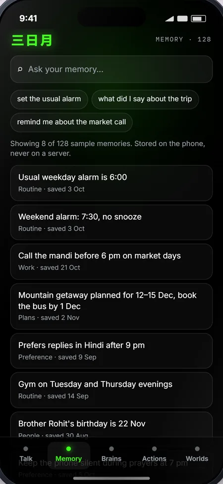
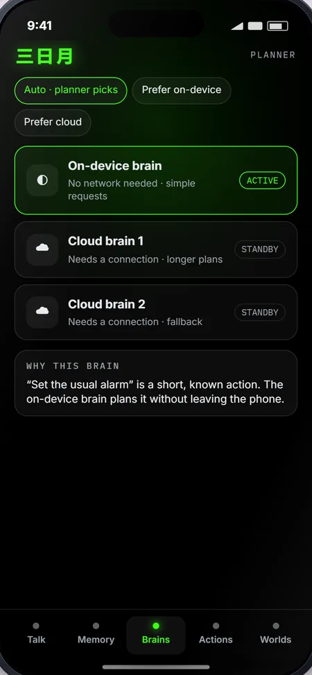

Case study · Voice assistant · Android
Mikazuki
A voice operating system for one person, running on the phone itself.
Open the live demo Start a project like this
- Type
- Voice operating system for one user
- Platform
- Android
- Built with
- Kotlin, Compose, Bun, Hono, sqlite-vec
- Status
- Delivered, version 1.0.0
Inside the product. Real screens from the working demo.

Wake, listen, plan, act
Each stage is visible, from the wake word heard on the device to the action carried out on the phone.

Recall by meaning
Say “set the usual alarm” and it finds the memory where you said which time is usual.

Three brains
Two in the cloud, one on the device. The planner picks one for each request and says why.
The problem
Most assistants are built for millions of accounts at once. They answer the average question well and your particular question poorly.
They also start every conversation from zero, so the work of remembering stays with you.
What we built
Mikazuki has one user, one phone and one memory. It hears a wake word on the device, recalls what matters from long-term memory, plans with one of three brains, and carries out the action on the phone through Android’s accessibility service.
Decisions that matter
- Memory is a SQLite database with sqlite-vec on the phone, not on a server.
- The wake word is heard on the device.
- Actions run on the phone itself through the accessibility service.
- A visible history shows every action the assistant performed.
About the demo
Sample memories and actions in the demo are fictional.